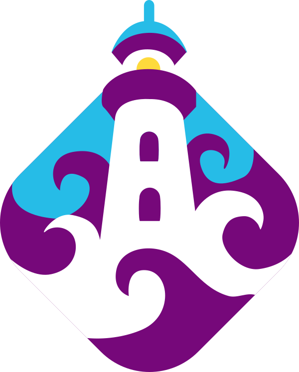
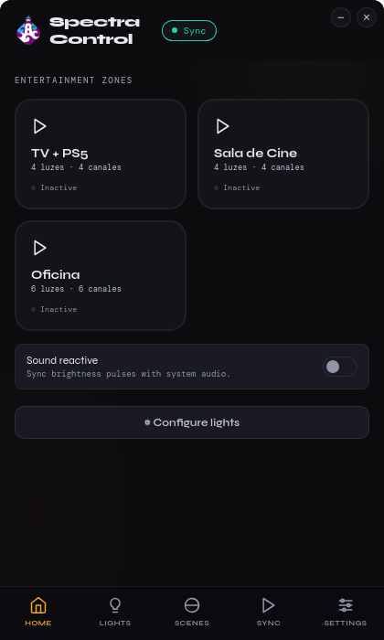
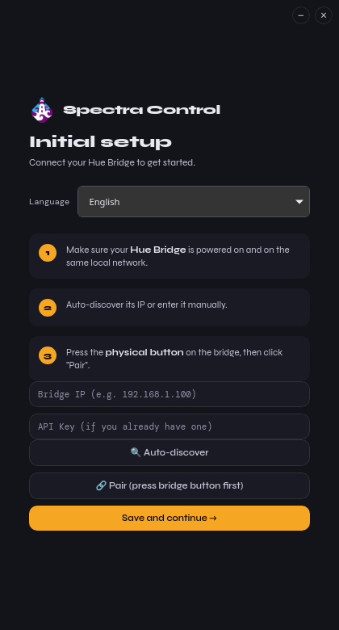
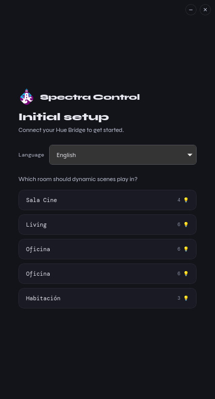
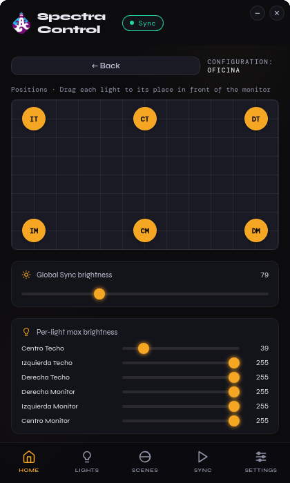
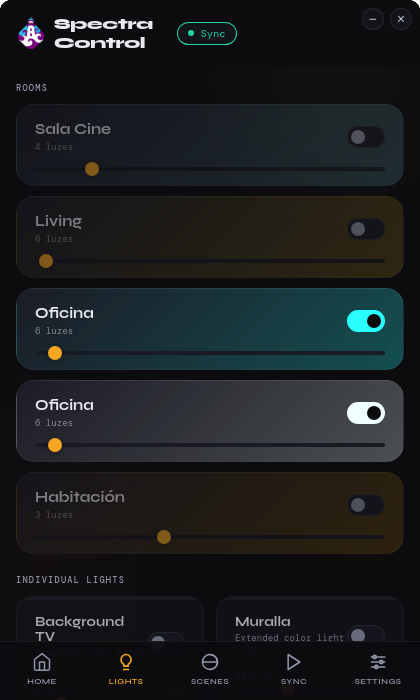
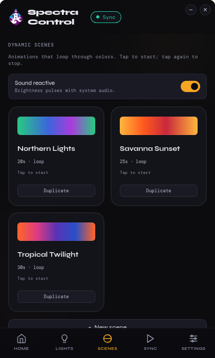
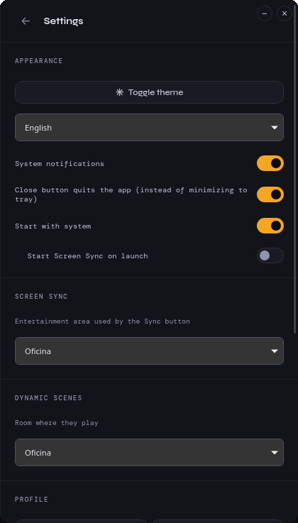

Screen Sync, the real way
DTLS streaming directly to your bridge on UDP 2100 (HueStream v2). Shows up as "synchronized" in the Hue mobile app — exactly like Hue Sync would.

SpectraControlSpectraControl fills the gap left by Hue Sync (which has no Linux build). Per-light control, animated scenes, and screen-to-light sync over the official Hue Entertainment API v2. Native Wayland capture. No browser hacks.


DTLS streaming directly to your bridge on UDP 2100 (HueStream v2). Shows up as "synchronized" in the Hue mobile app — exactly like Hue Sync would.
xdg-desktop-portal Screencast +
GStreamer pipewiresrc, wrapped in
Tauri. Bypasses WebKitGTK's broken
getDisplayMedia entirely.
Animated color loops with adjustable tempo. Ship with Northern Lights, Savanna Sunset, Tropical Twilight — or design your own in the in-app keyframe editor.
Drag each bulb to its real-world position in front of your monitor. The sync engine maps screen regions to lights using the layout.
In-place AppImage updates via
tauri-plugin-updater. Every release is
signed with minisign — the public key is embedded in
the binary.
System tray with show / quit, minimize-on-close, start-with-system, native notifications, light/dark theme, borderless titlebar. Spanish & English, file-based i18n.
The app ships bilingual (EN / ES) with a one-time picker on first launch — screenshots below are in English.






Pre-built bundles for every tagged release live on GitHub Releases. AppImage is recommended — it's the only bundle that supports in-place auto-updates.
Distro-agnostic. Supports the in-app updater.
chmod +x SpectraControl_*_amd64.AppImage
./SpectraControl_*_amd64.AppImagelibfuse2 (Fedora:
fuse-libs). Fallback:
--appimage-extract-and-run.
.deb bundle. Updates via re-install.
sudo dpkg -i SpectraControl_*_amd64.deb.rpm bundle. Updates via re-install.
sudo rpm -i SpectraControl-*.x86_64.rpmxdg-desktop-portal (GNOME or KDE).
pipewiresrc — package
gstreamer1-plugin-pipewire on most
distros.
generateclientkey: true — required for
the Entertainment v2 DTLS PSK.
~/.config/spectracontrol/hue_config.json; user scenes are loaded from
~/.config/spectracontrol/scenes/*.json
(overrides built-ins by id).
Tested on Bazzite (Fedora 44 immutable) + GNOME Wayland with NVIDIA. Should also work on KDE Plasma Wayland and any compositor that exposes the Screencast portal.
The roadmap is public — audio sync, per-light screen regions, real-time bridge state, and more. Contributions, bug reports, and "this doesn't work on my distro" are all welcome.